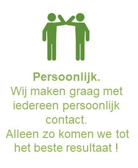
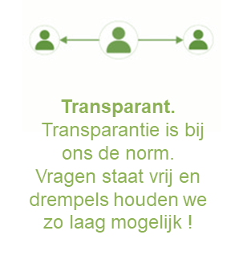

GT Solution BV is ontstaan vanuit de gedachte dat ieder individu zijn eigen talenten en kwaliteiten heeft en je deze, als je het goed doet, zeer goed in kunt zetten en zo succesvol kunt laten zijn. Ja, en aan het begin waren er 3 mannen, één met kennis van personeel, één met kennis van marketing en één met kennis van ICT. En deze drie zijn bij elkaar gebracht tot een bedrijf waarin al deze afdelingen elkaar perfect versterken.
 Bij al onze diensten bieden wij oplossingen en begeleiden wij deze van het begin tot het eind! Wij ontzorgen alle partijen zoveel mogelijk. Bij Personeel kan dit zijn op het gebied van facturatie, contractbeheer en de communicatie tussen de partijen. Bij Marketing zorgen wij dat alles volgens de afspraken geregeld is en bij ICT dat je optimaal gebruik kunt maken van de afgenomen diensten.
GT Solution biedt een totaal concept van begin tot het einde, zo tot alles werkt. Alles onder één dak!